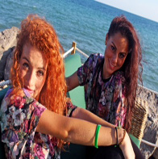

Primera escuela de Valencia especializada en Danza Urbana. Organizadores de campeonato de danza urbana URBAN BEAT VALENCIA, compañia de danza para musicales, animaciones... Apariciones y colaboraciones con programas de televisión, marcas de renombre... Son algunas de las labores que hemos realizado durante todo este tiempo. Trabajamos para fomentar el baile y la tecnica con la gran variedad de estilos que ofrecemos en la escuela.
COMPAÑIA DC
URBAN STYLE PROFESIONAL Curso de formación profesional en danza urbana, especialmente para aquellas personas que tienen ya nociones básicas en la materia y quieren profundizar mas en dicha cultura y estilo. Por primera vez en Valencia un curso hecho por y para profesionales del estilo urbano. Las disciplinas serán taller coreográfico, house, historia y cultura urbana, hip hop, free style y muchas disciplinas mas para hacer del curso URBAN STYLE PROFESIONAL el mas completo en cuanto al estilo urbano. El curso comienza el 1 de octubre, todos los sábados de 10 de la mañana a 15 de la tarde, finalizando en junio. Como profesores titulares tendremos a Jorge Vidal, mario d´block...e invitados durante el curso. El objetivo sera que el alumno adquiera nuevas habilidades y técnicas, ademas de desarrollar sus aptitudes para ser un bailarín profesional. El curso esta certificado por 3 grandes escuelas y grupos, Dance Center Valencia, In situ Alicante y D´block Barcelona. 15 bailarines formaran parte de dicho curso, donde tendrán un seguimiento mensual y pruebas trimestrales para evaluar los avances tanto individualmente como del grupo. Ademas se premiara con una beca de 1 semana en una de las mejores escuelas de danza urbana de España al mejor alumno del curso y como prueba final sera la creación de un show de danza urbana por y para profesionales. En definitiva un curso donde el bailarín y profesional del estilo urbano sienta que desarrolla sus habilidades, sus aptitudes y que crece en el mundo de la danza urbana.
En 1992 comienza su formación en Danza clásica, danza española y Flamenco. Unos años más tarde comienza su formación en los bailes de salón y latinos. Forma parte de la compañía profesional de danza española y flamenco de Valencia, dirigida por Martin Vargas (ex coreógrafo del ballet nacional) Trabaja también como bailarín para las empresas de espectáculos Excelsior, Benhavent, La Unión y Saga Producciones (con esta ultima realiza numerosas Zarzuelas en distintos teatros del territorio español.) Exhibiciones de bailes de Salón en las salas más conocidas de Valencia (Casablanca, Valencia Swing, Continental…) Ha bailado en el teatro Olimpia, Teatro principal de Valencia, Palau de les arts, en la ópera Carmen bajo la dirección de Carlos Saura y Cristina Hoyos. Actualmente pertenece a la compañía Profesional de Danza Española y Flamenco de Valencia dirigida por Marieta Romero y a la compañía de Salsa Mackbache DC dirigida por Agustin Williams.
Titulada en Danza Española por el conservatorio de música y danza de Valencia (1987-1999) compaginando sus estudios de danza clásica y competición con profesores de la talla Gerard Collins, Kitz Morino... Poco a poco se ira adentrando en el mundo del funky y el hip hop, su gran pasión, a través de clases y congresos en Alicante, Madrid, Barcelona, Roma, París, Londres y New York con profesores como Fabrice Labrana, Luam, Lauren Courtellemont, Jimmy Wiliams, Kimberly Taylor, Jason Beitel, Rudeye, bryant Baldwin entre otros. Su trayectoria profesional comienza como bailarina para diversos programas de televisión videoclips y anuncios, ademas de ser asistente coreografa de eventos y musicales por toda la Comunidad Valenciana. En 2007 es 1er clasificado categoría absoluta en el campeonato de hip hop de la Comunidad Valenciana. Actualmente coreografía eventos para Formula 1 y Volvo ocean Race, Aguila Amstel entre otros, ademas de ser directora y coreografa del musical ¨BSO de tu vida¨, ¨Stars¨grandes mitos del espectáculo entre otros. En la actualidad es propietaria y directora de la escuela de danza DANCE CENTER VALENCIA, donde imparte clases y dirige eventos de todo tipo, ademas de dirigir dos musicales propios ¨Aquellos maravillosos años¨y ¨Dance School¨ incluyendo Technized ¨La calle en Directo¨, un espectáculo de autentica danza Urbana.
Formada en España, Londres y Los Angeles con profesores nacionales e internacionales. Ha impartido clases en stuidio68 London y Pineapple Studios. Bailarina en el IDC 2012 bajo la coreografia de Jerome Esplana, Janina Suramach, Vinh nguyen y Albert Sala y bailarina para masters of Movement en el world of Dance L.A 2013.
Formado en Los Angeles, Londres y Lorrach. Director y coreografo de los grupos FRESH y GROOVE SQUAD. Componente del grupo Kalipsho´s art. Cordinador de THE Big Workshop VLC. Ganador de España individual hiphop ¨Dance cool 2010¨ 3 Veces subcampeon Funkydance Valencia. Ganador del concurso ¨Freestyle Fanatics 2009¨. Juez en el campeonato de Freestyle de Valencia 2009(cafe paris, Valencia) Juez en el III campeonato de hiphop de murcia 2010. Juez en el campeonato lollipops(Madrid) Organizador de campeonatos de Bboying/hiphop en Valencia Ha trabajado para Sony Ericsson, Dior, MTV, Calvin Klein, Ford, Guru, Caribe mix, Blend, Cimarron, Levis, Malibu, Anoosh, Luxoir, Alfredo Esteve....... Artista, Director de compañia, coreografo y actor.
Formacion en Break Dance desde 2004 con Supremos crew, participacion en todo tipo de campeonatos y espectaculares a nivel nacional. En 2009 empieza su trayectoria como profesor de baile Break dance y comienza a formarse en otros estilos como hip hop/new style, el Lockin y el Poppin. Formado con profesores internacionales como: Shit Kingz, Jun Quemado, Movemen Lifestyle, Quick crew, Joesar alva, Candance brown, entre otros. y con un gran nivel de formacion con profesores nacionales.
-New Style Experimental
Componente del legendario grupo Aktuel force, grupo pionero del (breakdance) en Francia que se forma en 1983. Coreografo y bailarin de B-boying, trabaja como Bailarin profesional en festivales y teatro (Brouaha Street internacional Festival, Dani Panullo Danceteathre cia). Consigue alzarse con el primer premio en distintos campeonatos nacionales y internacionales. Realiza Masterclasses y Cursos por toda Europa, la peninsula y numerosos espectaculos en Festivales de danza, teatro, videoclips, television, eventos, etc....
Pilates
Nacida en Valencia, formada en Paris ( Harmonic ), Florencia (escuela opus ballet) y Los Angeles. Ha impartido clases en numerosas escuelas de la comunidad ademas de dirigir centros deportivos e impartir master class por toda la comunidad. En la actualidad es creadora y directora de la compañia de danza contemporánea "Contracolp".
Formado en varios estilos por profesores nacionales como isaac suarez, frank da costa, sandra maciá, xavi marti .... e internacionales como shit kingz, cris martin, brian puspos, pat cruz, jilian mayers, paul ross, quick crew, y devin jameson entre otros, lo que le ha llevado a desarrollar un estilo propio, personal y particular a la vez que innovador y diferente, gracias a las influencias de varias disciplinas como el hip hop y el contemporáneo.
Formada por profesores nacionales e internacionales como Lyle Beniga, Mariel Martin, Keone Madrid, Chris Martin entre otros y componenete de varios grupos de competición como Breathe y Pumpuka, desarrolla un estilo único influenciado por otras disciplinas como el contemporáneo, el clásico e incluso el baile de salón...llevandola a impartir clases de una forma peculiar y personal.
Profesoras de la escuela funkadelic y difusoras del Dancehall por la comunidad Valenciana, Nereida y Orianna se forman en España y en Francia, perteneciendo a varios grupos de competición y expresando en cada clase la mejor energia y esencia del dancehall.
Director de funkadelic dance studio y formado en escuelas de renombre en ciudades como Los angeles, Tokio y Paris, convina su trabajo de danza urbana con disciplinas como el contemporáneo y el jazz rock llevandole a crear un estilo propio y personal que traslada a sus compañias de danza, a sus clases y sobretodo a sus alumnos.
Graduada por el Conservatorio Profesional de Danza de Valencia en el 2005, en la disciplina de flamenco, ha compaginado sus trabajos como bailarina en zarzuelas, musicales y congresos en España, Italia y Alemania con su otra gran pasión,el baile deportivo, siendo campeona autonómica en 2012 y 2013 y finalista en el campeonato de España de baile deportivo durante este último año.
Realiza sus estudios de danza clásica en el Conservatorio Profesional de Valencia, compaginando su formación con la disciplina del baile deportivo y trabajando como bailarina en diversos espectáculos musicales por la Comunidad Valenciana. Su clase de técnica es perfecta para aquellos que realizando otras disciplinas como la danza urbana, precisan de toda la base técnica del clásico y quieren mejorar en esta materia.
Profesor de Hip hop, Street dance, Freestyle y House. Impartido clases en Londres, gran canaria, Alemania, Barcelona, Bilbao, San sebantiam. Sitges. Guadalajara, Rusia, Moscu... Trabajando en grandes escuelas tanto nacionales como internacionales, ha sido juez de campeonatos de danza urbana internacionales y trabajando en proyectos, programas televisivos y spots como: MTV (London-Russia-Germany) - Much Music (Canada) - TMF (Holland) - Super Channel - Varia Euro Sport - RTL TVI – CLUB RTL – Plug TV -RTBF - TV1- KA2 - VT4 (Belgium) TF1 – France 2 – France 3 – M6 – MCM (France) - ZDF (Germany) – TV3 (Spain) Audi A3 expo Las Palmas: Choreograph and dancer Camel club promo